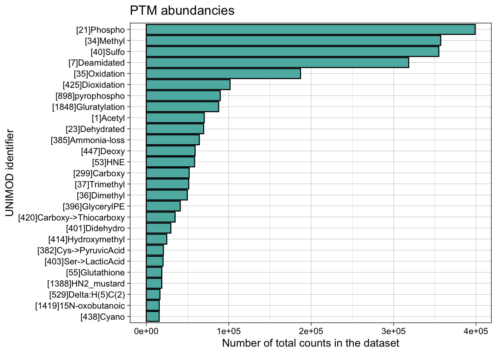
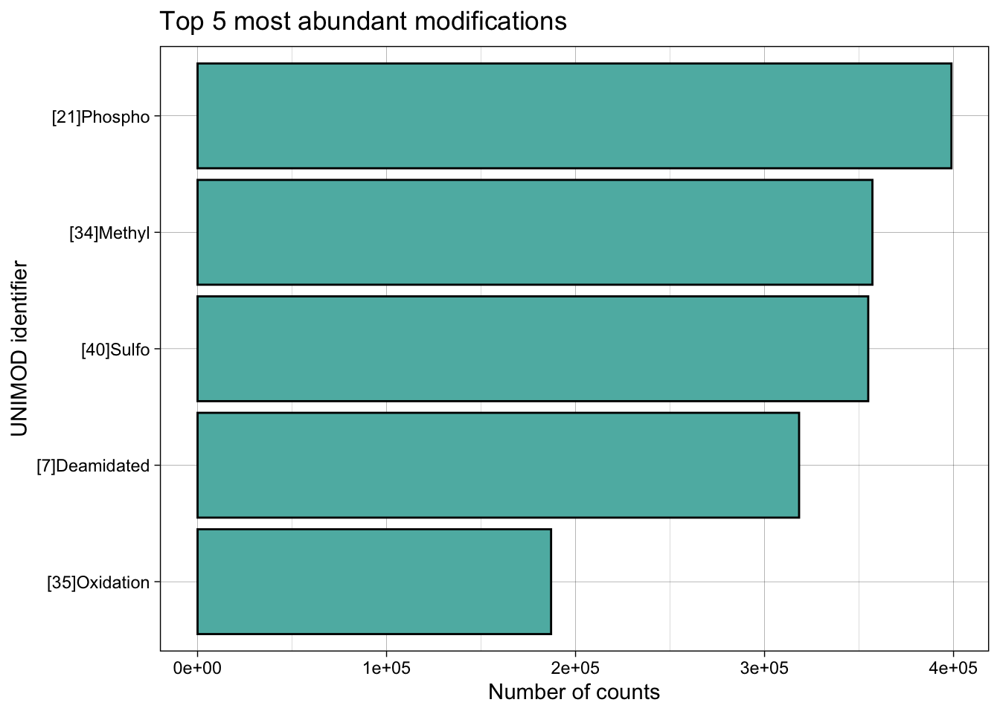
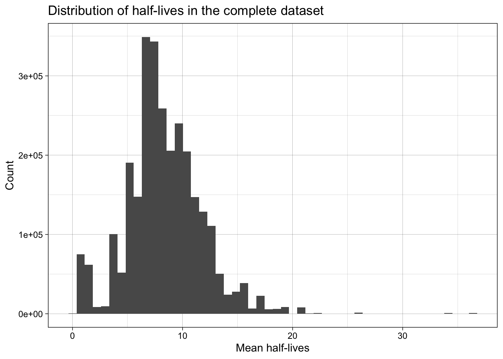
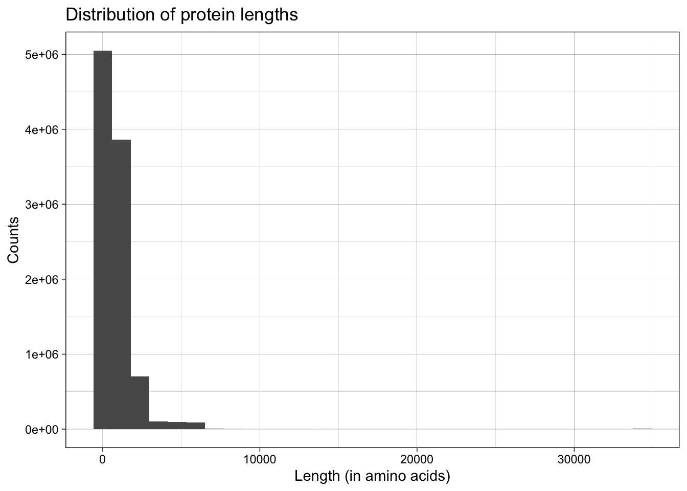
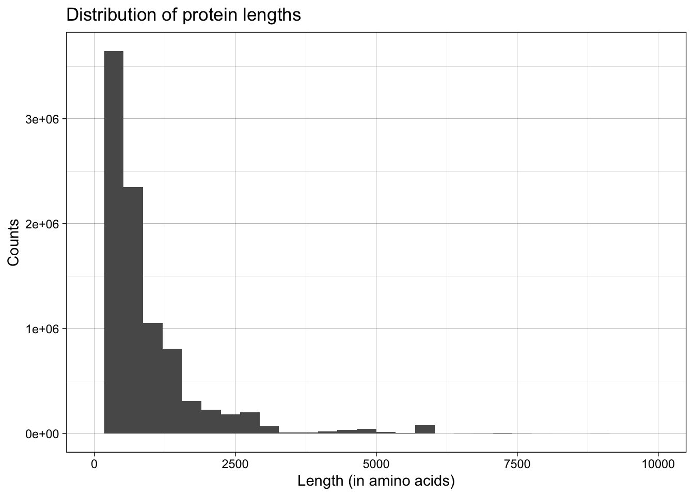
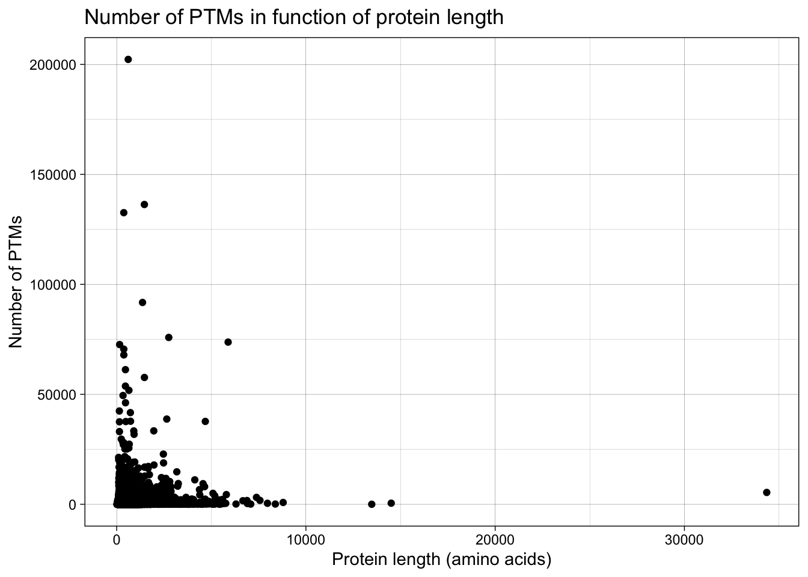
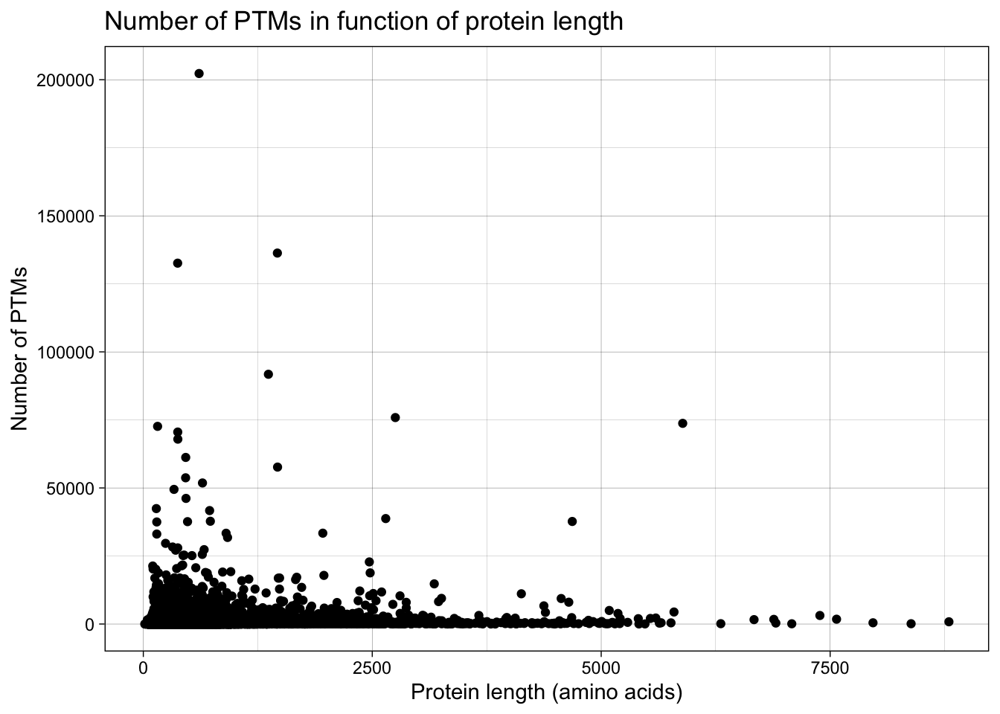
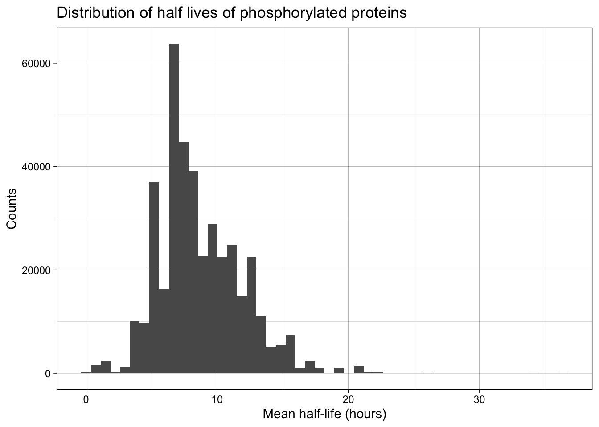
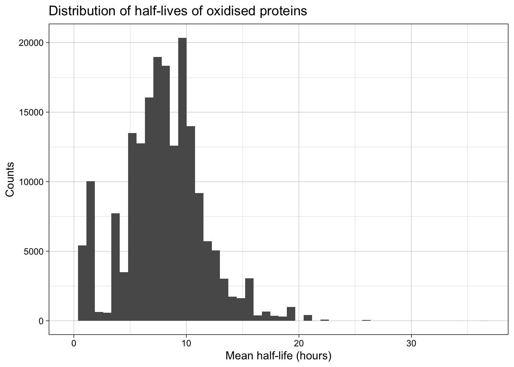

getwd()
#write.table(file, file = 'LeadProt_names.tsv', row.names=FALSE, sep="\t", quote = F)
# orange = #FF681E
# purple = #5A2A82
# green = #5DB7B1
# grey = #7C7C7C
# black = #1B2944MS3_human
Data retrieval
PTMs
Original data
| project_id | Uniprot_entry_name | LeadProt | ptm_loc | ptm_name | ptm_res | ptm_class | total_counts |
|---|---|---|---|---|---|---|---|
| PXD000004 | 1433B_HUMAN | P31946 | 40 | [7]Deamidated | N | Artefact | 2 |
| PXD000004 | 1433B_HUMAN | P31946 | 42 | [34]Methyl | E | Post-translational | 1 |
| PXD000004 | 1433B_HUMAN | P31946 | 96 | [4]Carbamidomethyl | C | Chemical derivative | 20 |
| PXD000004 | 1433B_HUMAN | P31946 | 220 | [35]Oxidation | M | Artefact | 24 |
| PXD000004 | 1433B_HUMAN | P61981 | 20 | [35]Oxidation | Y | Post-translational | 1 |
| PXD000004 | 1433B_HUMAN | P61981 | 23 | [35]Oxidation | M | Artefact | 32 |
This is a table of various types of modifications in the dataset:
| ptm_class |
|---|
| Artefact |
| Post-translational |
| Chemical derivative |
| Multiple |
| Pre-translational |
| O-linked glycosylation |
| Other glycosylation |
| N-linked glycosylation |
| glyco |
| Co-translational |
| Synth. pep. protect. gp. |
[1] 11 1The different chemical modifications:
| ptm_name |
|---|
| [7]Deamidated |
| [34]Methyl |
| [4]Carbamidomethyl |
| [35]Oxidation |
| [447]Deoxy |
| [950]Cation:Li |
[1] 429 1The dimensions of the original database are 12934128, 8
Selecting post-translational modifications
First step is to filter by Post-translational
After filtering out all of the other modifications the final dimensions of the data frame are 2373854, 8.
Basic statistics (only for post-translational modifications)
- There are 18929 unique proteins that were investigated.
- There are 115 unique PTMs
Protein half-lives
Protein half-lives were used as a measure of protein turnover rates. There is no overall database with all of the protein half-lives, therefore the data was found in different papers.
Human protein life-times were downloaded from the following paper: https://www.science.org/doi/10.1126/science.1199784#appendix
Human protein life-times were downloaded from the following paper: Systematic study of the dynamics and half-lives of newly synthesized proteins in human cells. The necessary data can be found in the Supplementary Material section (Supplementary table 3 - Table S3), in the fourth file with the name SC-007-C5SC03826J-s004.xlsx.
| UniProtID | mean_hl_hours |
|---|---|
| O00203 | 9.248128 |
| O00232 | 4.000000 |
| O00299 | 10.010791 |
| O00422 | 6.347502 |
| O00469 | 5.237228 |
| O00483 | 7.287081 |
| project_id | Uniprot_entry_name | LeadProt | ptm_loc | ptm_name | ptm_res | ptm_class | total_counts | mean_hl_hours |
|---|---|---|---|---|---|---|---|---|
| PXD000004 | 1433B_HUMAN | P61981 | 20 | [35]Oxidation | Y | Post-translational | 1 | 11.120603 |
| PXD000004 | 1433E_HUMAN | P62258 | 21 | [447]Deoxy | D | Post-translational | 1 | 8.688232 |
| PXD000004 | 1433E_HUMAN | P62258 | 99 | [421]Sulfide | D | Post-translational | 1 | 8.688232 |
| PXD000004 | 1433E_HUMAN | P62258 | 211 | [34]Methyl | E | Post-translational | 1 | 8.688232 |
| PXD000004 | 1433G_HUMAN | P61981 | 35 | [34]Methyl | E | Post-translational | 3 | 11.120603 |
| PXD000004 | 1433G_HUMAN | P61981 | 38 | [34]Methyl | S | Post-translational | 1 | 11.120603 |
Matching protein half-lives and PTMs based on the UniProtID. The entries for which no half lives were found, will be removed. The dimensions before adding half-lives (filtered for Post-translational): 2373854, 8
The dimensions after adding half-lives: 678206, 9.
Visualisations
Previous master thesis
#human_ptms_with_hl %>% filter(project_id %in% c('PXD010469', 'PXD004713'))Distribution of types of post-translational modifications

Total counts are the number of times that this modification was detected across all projects. This label is way too small therefore the dataframe was filtered to only include PTMs with a total count above 50,000.

Distribution of protein half-lives
human_ptms_expanded <- human_ptms[rep(1:nrow(human_ptms), human_ptms$total_counts), ]
human_ptms_expanded <- human_ptms_expanded %>% select(-total_counts)
human_ptms_expanded_hl <- inner_join(human_ptms_expanded, hl, by= join_by(LeadProt == UniProtID))
ggplot(human_ptms_expanded_hl, aes(x = mean_hl_hours)) +
geom_histogram(bins = 50) +
labs(title = 'Distribution of half-lives in the complete dataset', x = 'Mean half-lives', y = 'Count')+
theme_linedraw()
Protein lengths
lengths <- read.csv(file = "/Users/anastasialinchik/Desktop/Thesis/DATA/protein_lengths_human.tsv", sep = '\t')
lengths <- lengths %>% select(UniProt = From, Length)
# there are some duplications for the lengths
lengths <- lengths %>%
group_by(UniProt) %>%
summarise(Length = mean(Length))human_ptms_expanded_length <- inner_join(human_ptms_expanded, lengths, by = join_by(LeadProt == UniProt))
ggplot(human_ptms_expanded_length, aes(x = Length)) +
geom_histogram() +
labs(title = 'Distribution of protein lengths', x = 'Length (in amino acids)', y = 'Counts') +
theme_linedraw()`stat_bin()` using `bins = 30`. Pick better value with `binwidth`.
ggplot(human_ptms_expanded_length, aes(x = Length)) +
geom_histogram() +
labs(title = 'Distribution of protein lengths', x = 'Length (in amino acids)', y = 'Counts') +
scale_x_continuous(limits=c(0, 10000))+
theme_linedraw()`stat_bin()` using `bins = 30`. Pick better value with `binwidth`.Warning: Removed 5897 rows containing non-finite values (`stat_bin()`).Warning: Removed 2 rows containing missing values (`geom_bar()`).
human_ptms_lengths <- inner_join(human_ptms, lengths, by = join_by(LeadProt == UniProt))
human_ptms_lengths <- human_ptms_lengths %>%
group_by(LeadProt) %>%
mutate(PTMs_per_protein = sum(total_counts)) %>%
select(LeadProt, Length, PTMs_per_protein) %>% distinct()
ggplot(human_ptms_lengths, aes(x = Length, y = PTMs_per_protein)) +
geom_point() +
labs(title = 'Number of PTMs in function of protein length', x = 'Protein length (amino acids)', y = 'Number of PTMs') +
theme_linedraw()
human_ptms_lengths_zoom <- human_ptms_lengths %>% filter(Length < 10000)
ggplot(human_ptms_lengths_zoom, aes(x = Length, y = PTMs_per_protein)) +
geom_point() +
labs(title = 'Number of PTMs in function of protein length', x = 'Protein length (amino acids)', y = 'Number of PTMs') +
theme_linedraw()
Phosphorylation
human_ptms_expanded_hl_phospho <- human_ptms_expanded_hl %>% filter(ptm_name == '[21]Phospho')
ggplot(human_ptms_expanded_hl_phospho, aes(x = mean_hl_hours)) +
geom_histogram(bins = 50) +
labs(title = 'Distribution of half lives of phosphorylated proteins', x = 'Mean half-life (hours)', y = 'Counts')+
theme_linedraw()
Oxidation
human_ptms_expanded_hl_oxi <- human_ptms_expanded_hl %>% filter(ptm_name == '[35]Oxidation')
ggplot(human_ptms_expanded_hl_oxi, aes(x = mean_hl_hours)) +
geom_histogram(bins = 50) +
labs(title = 'Distribution of half-lives of oxidised proteins', x = 'Mean half-life (hours)', y = 'Counts')+
theme_linedraw()
Most modified PTMs
ggplot(human_ptms_expanded, aes(x = ptm_res)) +
geom_histogram(stat = 'count') +
labs(title = 'PTM counts for each residue', x = 'Residue', y = 'Counts') +
theme_linedraw()Warning in geom_histogram(stat = "count"): Ignoring unknown parameters:
`binwidth`, `bins`, and `pad`